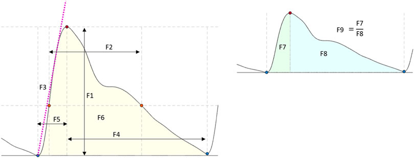
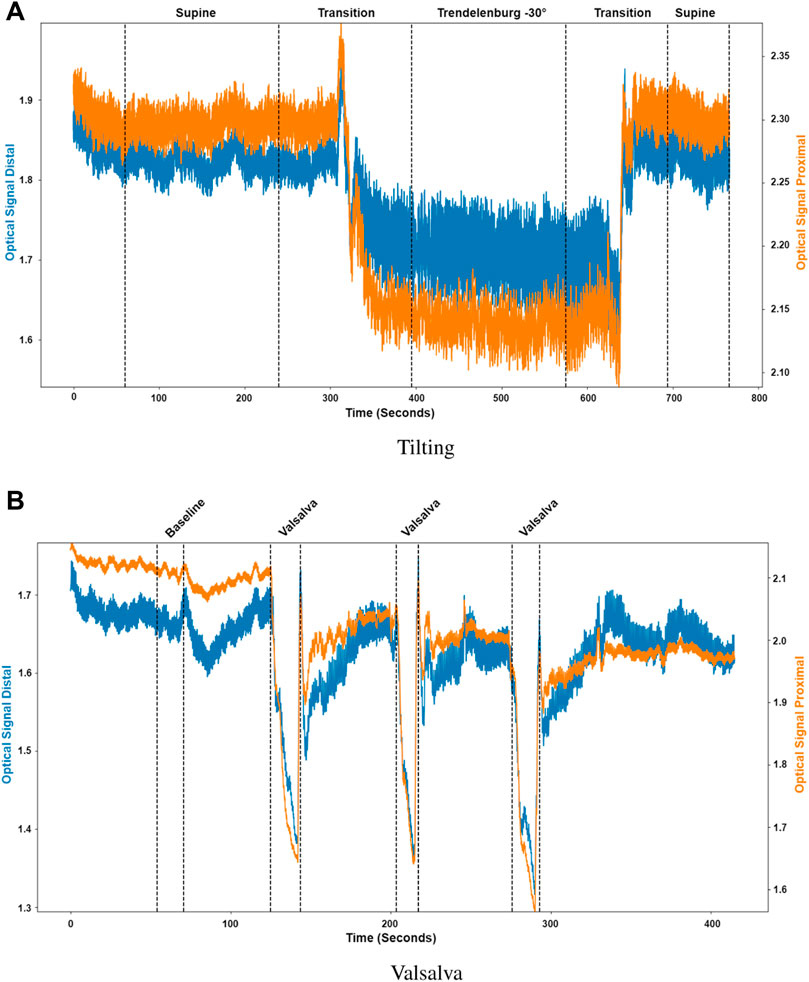

The investigation and evaluation of the association between pulsatile near infrared spectroscopic waveform features and induced changes in intracranial pressure in healthy volunteers.
Published in Frontiers Physiology
Non-invasive monitoring of intracranial pressure changes: healthy volunteers study
Project Details / Background
An optical intracranial pressure sensor was attached to the forehead of 16 healthy volunteers. Pulsatile near infrared spectroscopic signals were acquired from the forehead during body position changes and Valsalva manoeuvers. Features were extracted from the pulsatile signals and analyses were carried out to investigate the presence of statistical differences in the features when intracranial pressure changes were induced. Classification models were developed utilizing the features extracted from the pulsatile near-infrared spectroscopic signals to classify between different body positions and Valsalva manoeuvre.
The results revealed significant differences in the features extracted from these signals, demonstrating a correlation with ICP changes induced by positional changes and Valsalva manoeuvre. Classification models were capable of identifying changes in ICP using features from optical signals from the brain, with a sensitivity ranging from 63.07% to 80% and specificity ranging from 60.23% to 70% respectively. These findings underscored the potential of these features to effectively identify alterations in ICP.
The study’s results demonstrate the feasibility of using features extracted from optical signals from the brain to detect changes in ICP induced by positional changes and Valsalva manoeuvre in healthy volunteers. This represents a first step towards the non-invasive monitoring of intracranial pressure.
The results revealed significant differences in the features extracted from these signals, demonstrating a correlation with ICP changes induced by positional changes and Valsalva manoeuvre. Classification models were capable of identifying changes in ICP using features from optical signals from the brain, with a sensitivity ranging from 63.07% to 80% and specificity ranging from 60.23% to 70% respectively. These findings underscored the potential of these features to effectively identify alterations in ICP.
The study’s results demonstrate the feasibility of using features extracted from optical signals from the brain to detect changes in ICP induced by positional changes and Valsalva manoeuvre in healthy volunteers. This represents a first step towards the non-invasive monitoring of intracranial pressure.
Image Gallery

Features extracted from the optical signals. F1: Amplitude; F2: Pulse width; F3: Up slope; F4: Decay time; F5: Rise time; F6: Area under the curve; F7: Area of the systolic period; F8: Area of the diastolic period; F9: Ratio between both systolic and diastolic areas.

Sectioned signals per intervention. (A) Tilting, where the distal (blue) and proximal (orange) signals were sectioned to identify initial supine position, the transition from supine to Trendelenburg (−30°), Trendelenburg position, the transition to supine and final supine position. (B) Valsalva, where the distal (blue) and proximal (orange) signals were sectioned to identify the baseline condition and the three different Valsalva maneuvers.